-
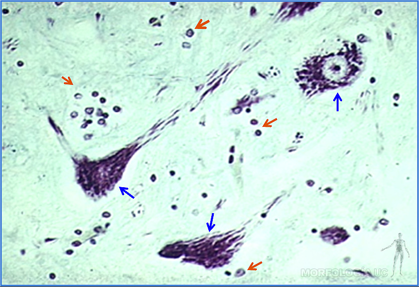
Fig. 3-98: MO de un corte por la sustancia gris de la médula espinal, tinción AT, destacan las neuronas (flechas azules) y los núcleos de las células de neuroglia (flechas rojas).
-
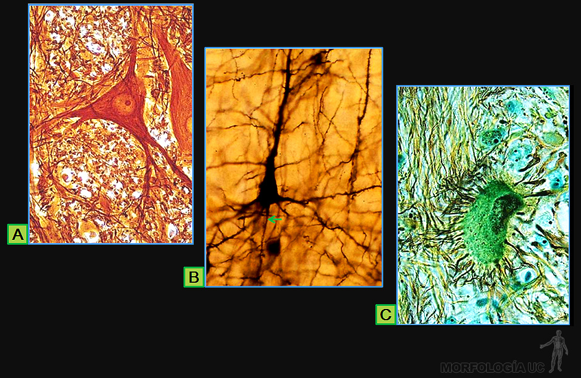
Fig. 3-99: MO de cortes por tejido nervioso en:
- A) médula espinal, en que destaca el pericarion y las dendritas de una neurona, rodeadas de axones, tinción de Cajal;
- B) corteza cerebral, muestra el soma neuronal, sus dendritas y el nacimiento del axón, tinción de Golgi;
- C) ganglio simpático, con soma neuronal (de color verde) al que llegan los terminales axónicos teñidos de color negro.
-
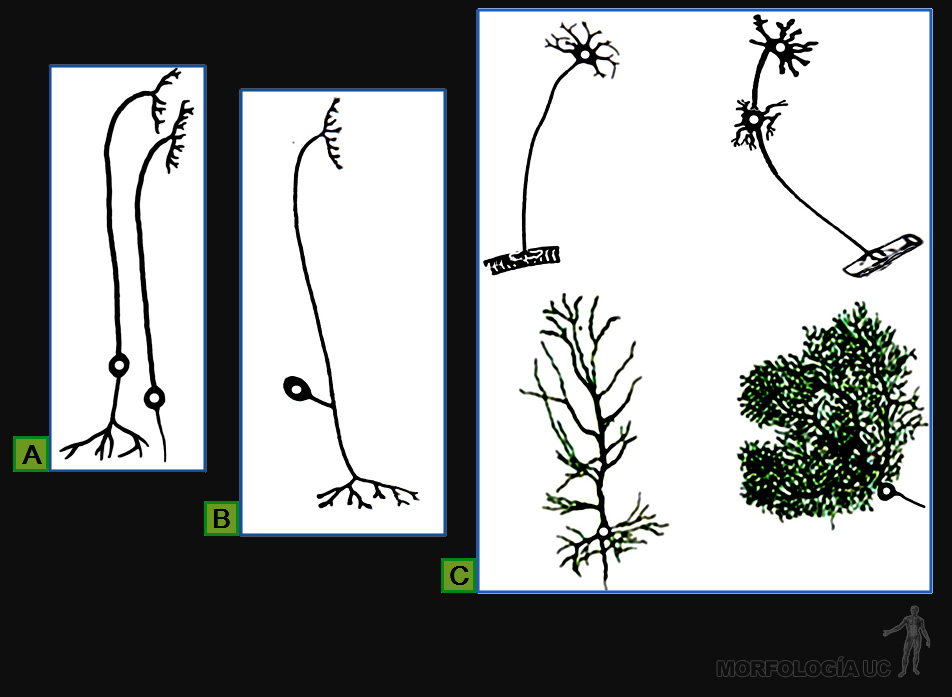
Fig. 3-100: Esquemas de las variaciones en la forma de las neuronas.
- A) bipolares;
- B) seudounipolares;
- C) multipolares.
-
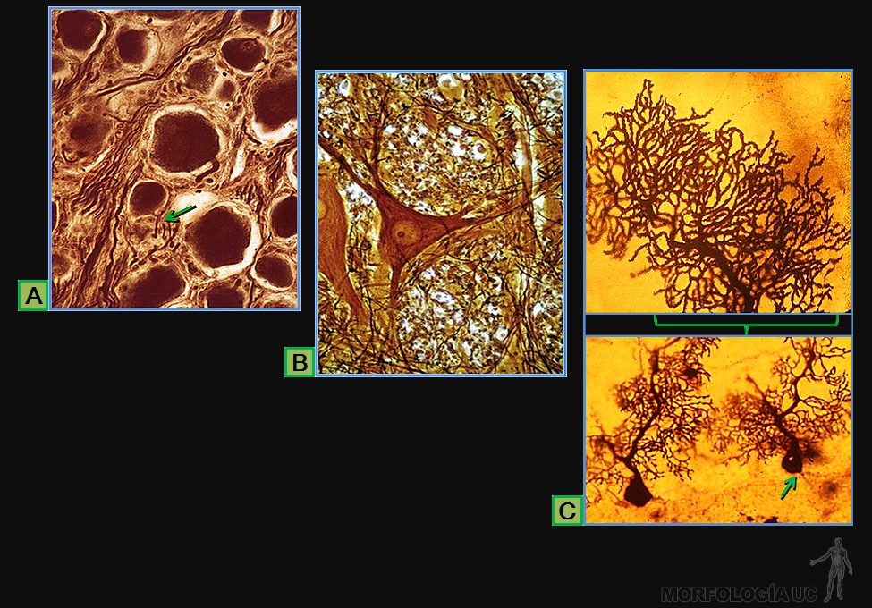
Fig. 3-101: MO de cortes por:
- A) neuronas seudo-unipolares en ganglio sensitivo, la flecha indica el axón, impregnación argentica;
- B) neurona multipolar en cerebro, tinción de Cajal;
- C) células de Purkinje en la corteza cerebelosa, cuyo su axón se indica con una flecha y en su arborización dendrítica destacan las espinas sinápticas, tinción de Golgi.
-
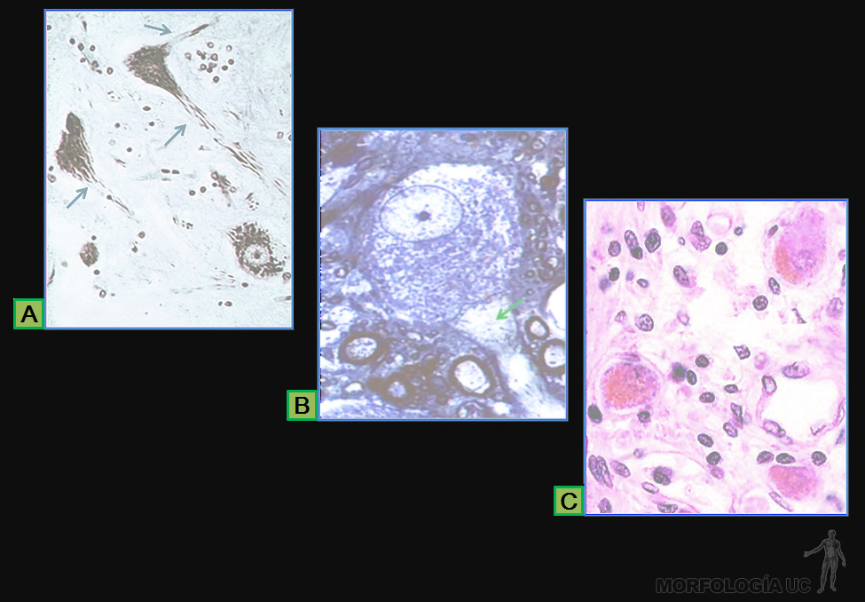
Fig. 3-102: MO de tejido nervioso, que destaca detalles de la estructura neuronal.
- A) neuronas motoras de médula espinal, cuerpo de NIssl en soma y dendritas (flechas) tinción AT;
- B) ausencia de cuerpo de Nissl en el axón (flecha), tinción AT;
- C) acúmulos de lipofucsina en el pericarion de neuronas de un ganglio sensitivo, tinción HE.
-
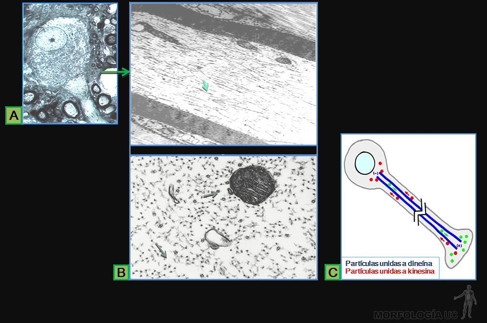
Fig. 3-103:
- A) MO por soma neuronal a nivel del cono axónico, tinción AT;
- B) MET de cortes longitudinal, y transversal por el axón, las flechas indican microtúbulos;
- C) esquema del rol de los microtúbulos en el desplazamiento de partículas a los largo del axón.
-
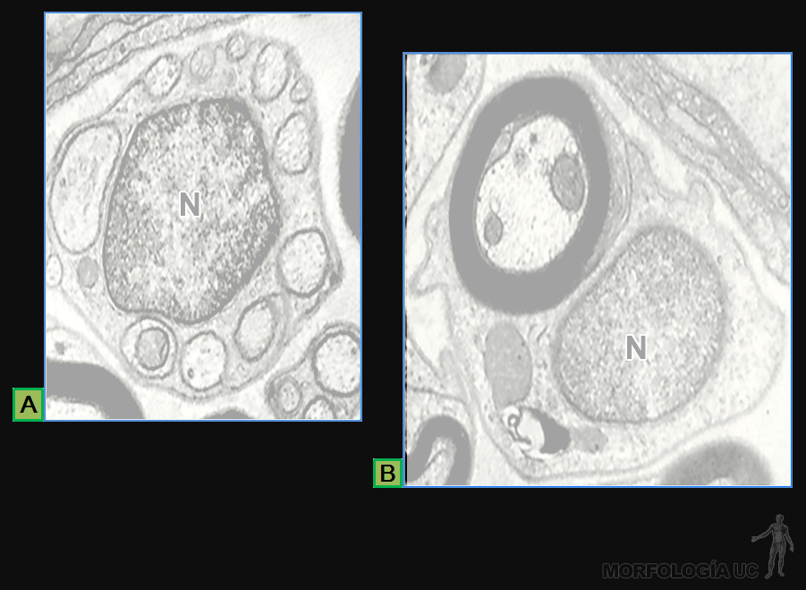
Fig. 3-104: MET de cortes transversales por fascículos nerviosos del S.N.P.
- A) fibra nerviosa amielínica;
- B) fibra nerviosa mielínica, (N= núcleo de célula de Schwann).
-
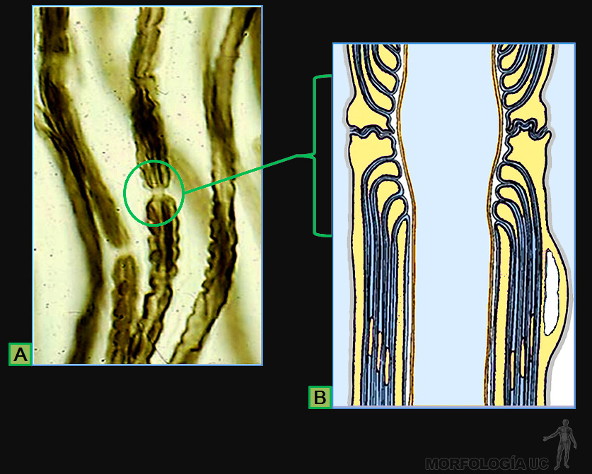
Fig. 3-105: Disección de la región supramesocólica, el estómago está levantado con el separador para ver la disposición de las ramas del tronco celíaco.
- A) MO de corte longitudinal por fibras mielínicas, tinción con tetróxido de Osmio;
- B) esquema de la estructura del nodo de Ranvier tal como se observa en el MET.
-
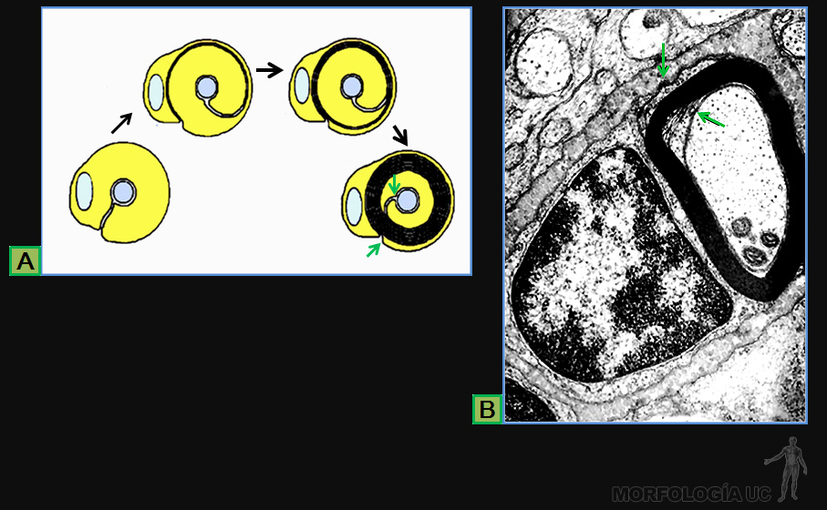
Fig. 3-106:
- A) esquema con la secuencia de formación de la mielina por la célula de Schwann;
- B) MET de corte transversal por una fibra nerviosa mielínica; las flechas indican los mesaxones interno y el externo.
-
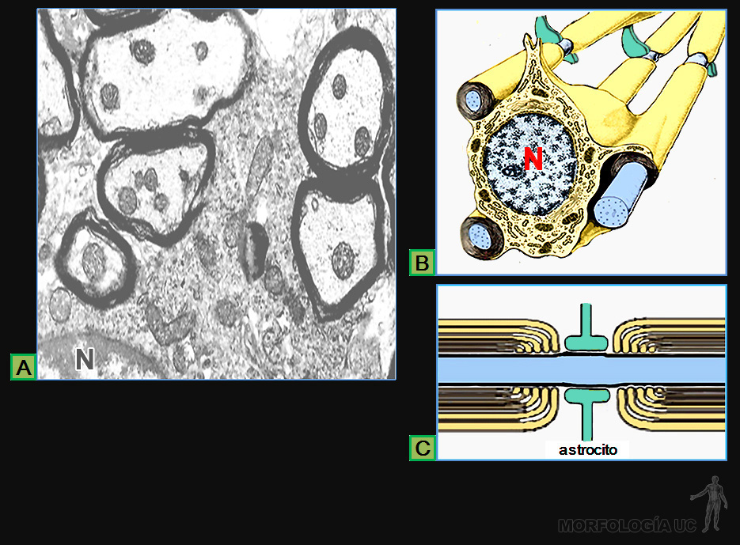
Fig. 3-107:
- A) Imagen al MET de fibras nerviosas mielínicas en el S.N.C. (N= núcleo de oligodendroglia);
- B) dibujo de célula de oligodendroglia y los axones que ella mieliniza;
- C) esquema de las prolongaciones de astroglia cubriendo un nodo de Ranvier.
-
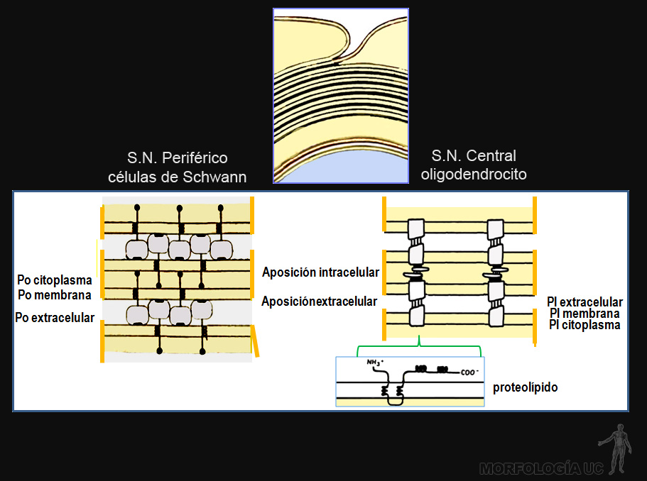
Fig. 3-108: Esquema en el que se compara la estructura molecular de la mielina del S.N.P con la del S.N.C.
-
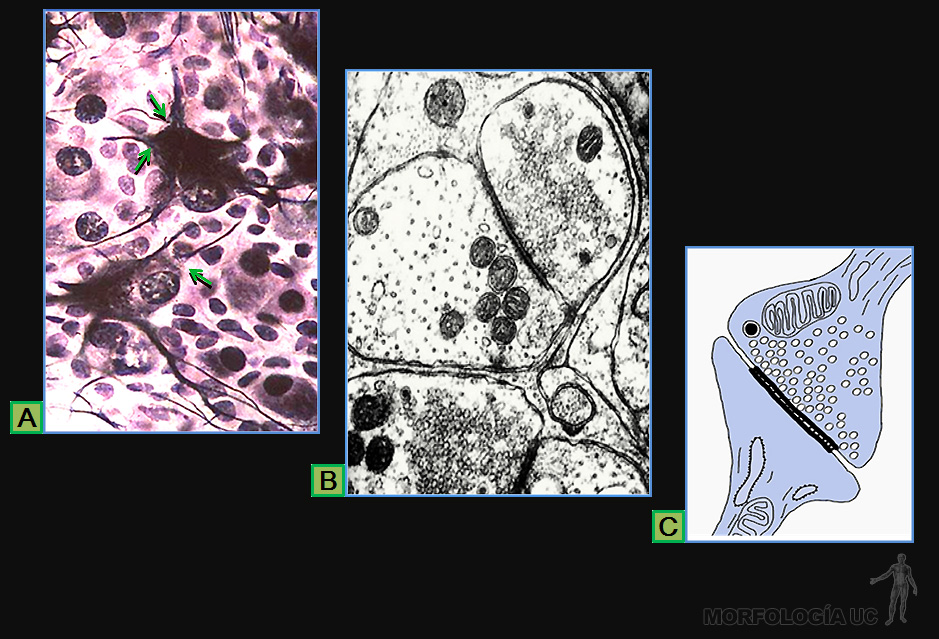
Fig. 3-109:
- A) MO ganglio simpático, tinción AT con impregnación de plata para terminales axónicos, (flechas verdes);
- B) MET de cortes por sinapsis axo-dendríticas en el ganglio;
- C) esquema de la estructura básica de la sinapsis química tal como se observa en el MET.
-
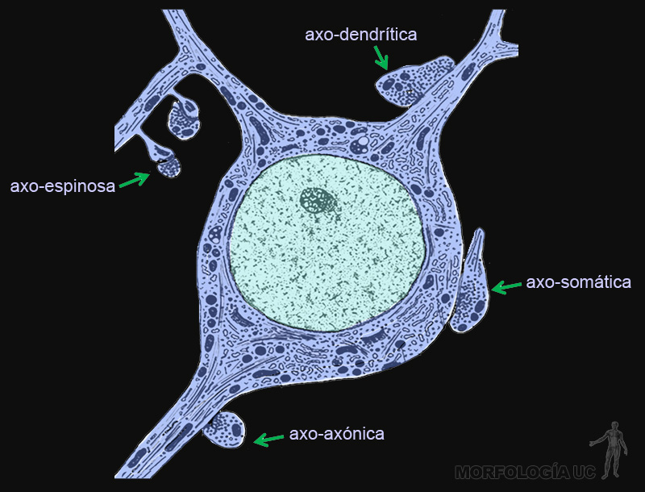
Fig. 3-110: Dibujo basado en observaciones al MET que muestra los tipos de sinapsis que se reconocen según su ubicación en la neuronas.
-
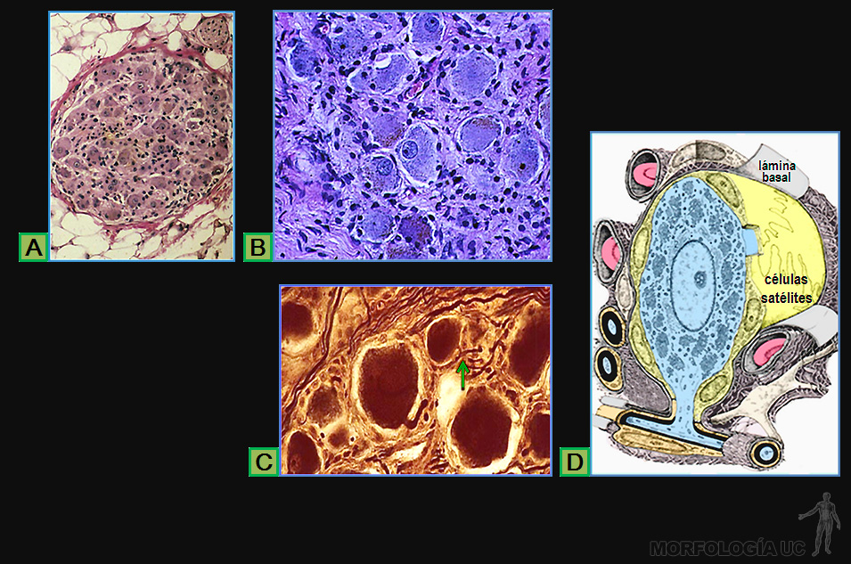
Fig. 3-111: MO de corte por un ganglio sensitivo, tinción HE.
- A) aparece completo, y en;
- B) su estructura se ilustra a mayor aumento;
- C) neuronas seudo-unipolares con impregnación argentica;
- D) esquema de la estructura de este tejido tal como se observa en el MET.
-
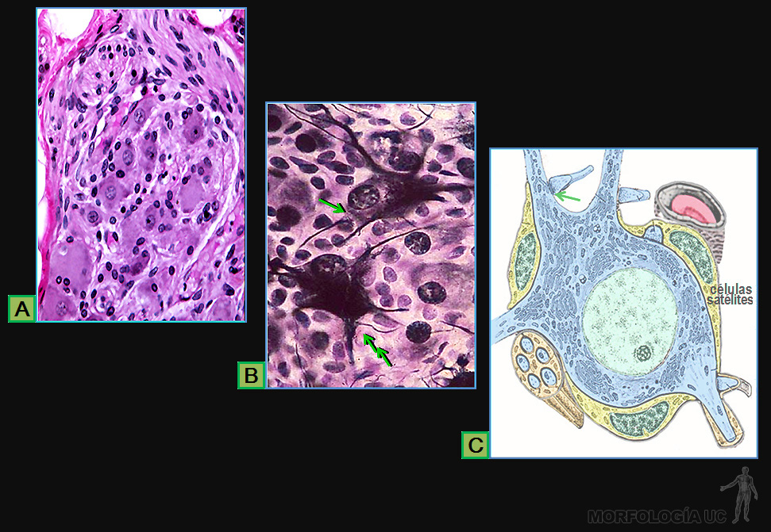
Fig. 3-112:
- A) MO de un ganglio simpático, tinción HE;
- B) MO ganglio simpático, tinción AT y tinción de color negro para las terminaciones axónicas que reciben estas neuronas;
- C) dibujo de la estructura de este tejido nervioso tal como se observa al MET.
-
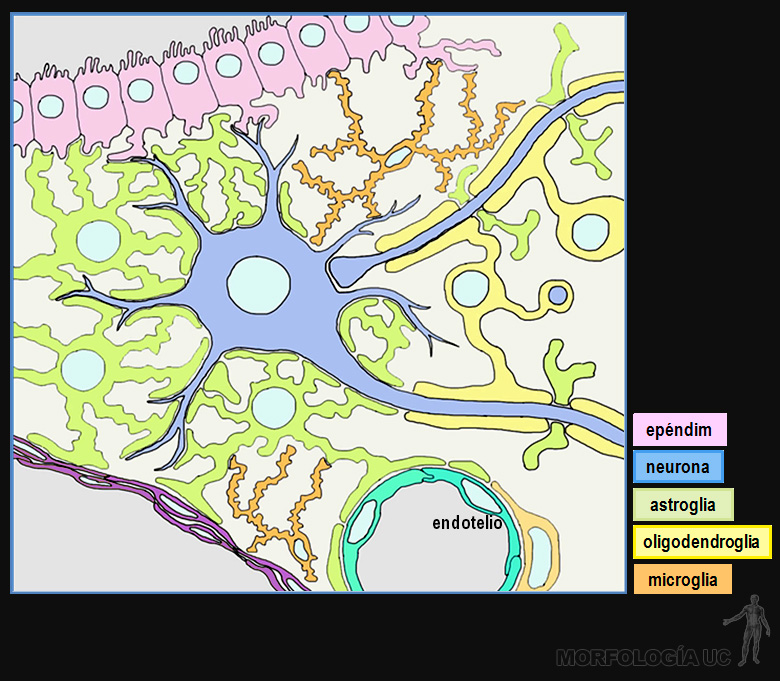
Fig. 3-113: MO de un corte transversal, por un nervio.
- A) tinción HE;
- B) tinción con tetróxido de osmio mostrando parte de dos fascículos; con la mielina y las células adiposas de color negro;
- C) M.O. de la periferia de un fascículos;
- D) MET de la misma zona en que destaca su perineuro.
-
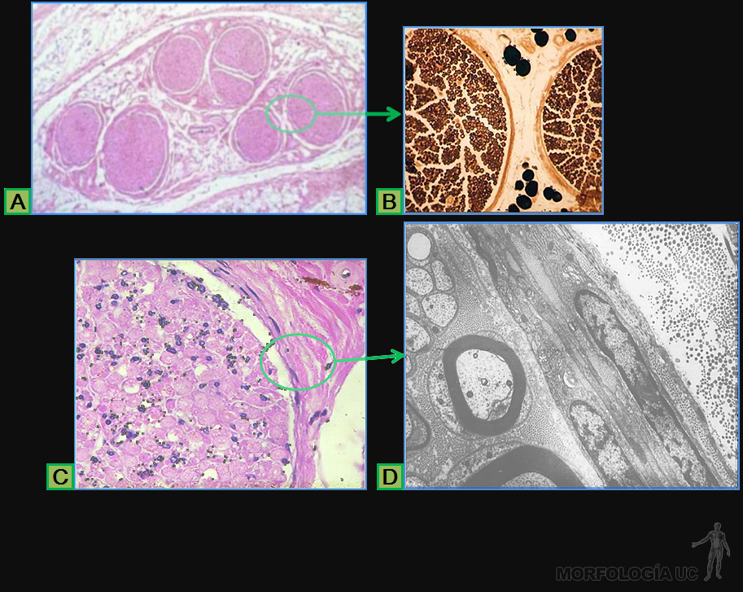
Fig. 3-114: Dibujo en que se muestra la organización de neuronas, glías y capilares sanguíneos en el tejido nervioso del S.N.C.
-
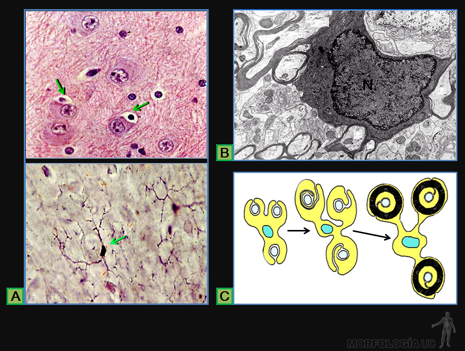
Fig. 3-115:
- A) MO de sustancia gris, en que se indican los oligodendrocitos asociados a somas neuronales (flechas) tinción HE, y su forma destaca luego de en tinción de Golgi- Río Hortega;
- C) MET por una célula de oligodendroglia que ha mielinizado a varios axones;
- D) esquema con la secuencia de formación de la mielina por una célula de oligodendroglia (color amarillo).
-
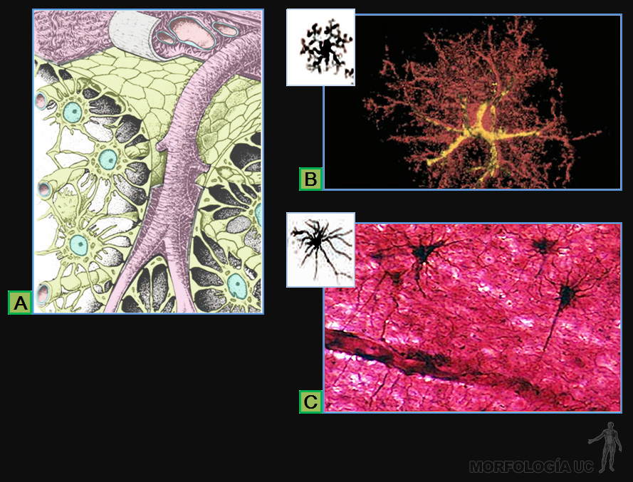
Fig. 3-116:
- A) esquema con la ubicación de los astrocitos (color verde) asociados a la pía madre (color lila) y a los capilares sanguíneos del tejido nervioso;
- B) MO de corteza cerebelosa con tinción citoquímica para astrocitos protoplasmáticos;
- C) MO de sustancia blanca del cerebelo con astrocitos fibrosos teñidos con impregnación argéntica de Golgi y Rio Hortega.
-
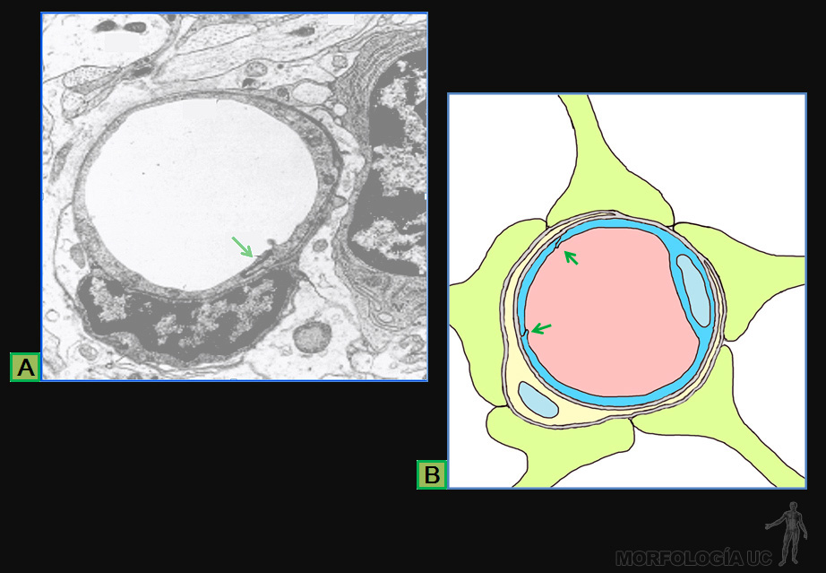
Fig. 3-117:
- A) MET de corte transversal por un capilar en el S.N.C.;
- B) dibujo que muestra las prolongaciones de astroglia (verde) asociados a la lámina basal de la pared del capilar (amarillo: pericito, azul: endotelio) tal como se observa al MET.
-
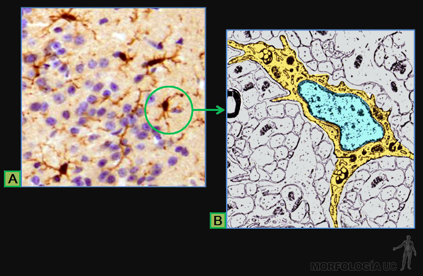
Fig. 3-118:
- A) MO de corte por cerebro con las de microglias teñidas de color café (método de Rio-Hortega), en;
- B) esquema de la estructura de una microglia tal como se observa al MET.
-
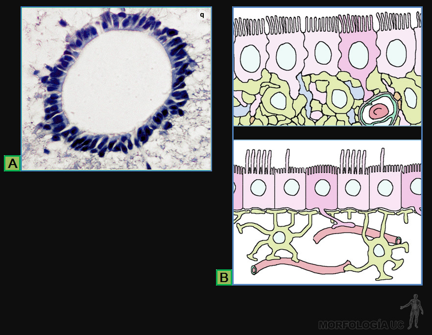
Fig. 3-119:
- A) MO de corte por el epéndimo, tinción HE;
- B) esquemas en que se muestra las células ependimarias, (rosado) y la astroglias (verde) asociadas tal como se observan al MET, y luego se ilustra en el esquema inferior la relación entre células ependimarias cuyo polo apical delimita el conducto epéndimo y su polo basal de asocia a prolongaciones de astroglia (verde) y a capilares sanguíneos.
-
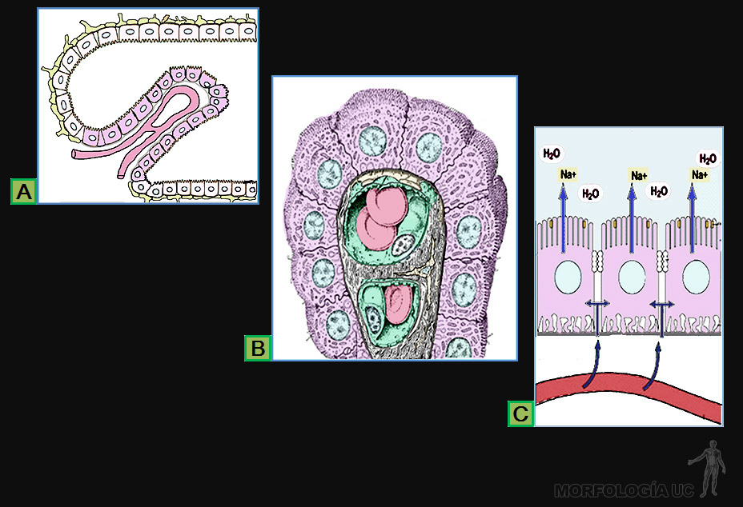
Fig. 3-120:
- A) esquema de la estructura de los pliegues del plexo coroídeo;
- B) dibujo de la estructura de un pliegue del plexo coroideo tal como se observa al MET;
- C) esquema que muestra los mecanismos de transporte que permiten la formación del líquido cefalo-raquídeo en los pliegues del plexo coroídeo.
-
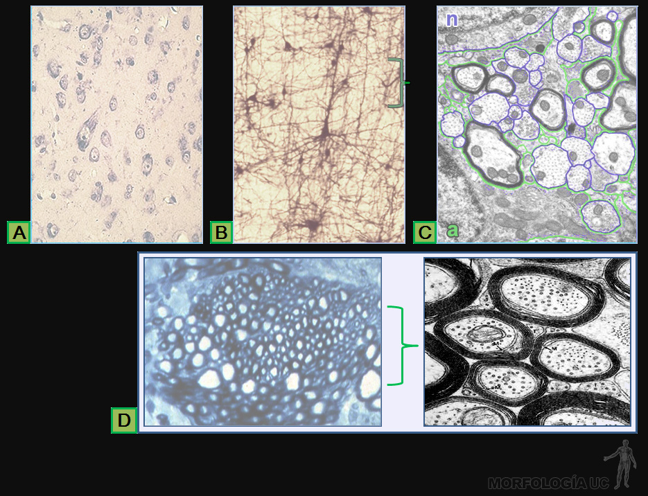
Fig. 3-121: MO de cortes por la corteza cerebral teñidos: en
- A) con AT y en;
- B) con tinción de Golgi;
- C) MET de la zona indicada de la sustancia gris, en la imagen se destaca en azul los bordes de pericarion, dendritas y terminales axónicos y en verde los bordes de la astroglia y sus prolongaciones;
- D) MO de corte transversal por cordón de sustancia blanca con la mielina de color azul, tinción AT; y en la MET destacan los cortes transversales por fibras mielínicas.
-
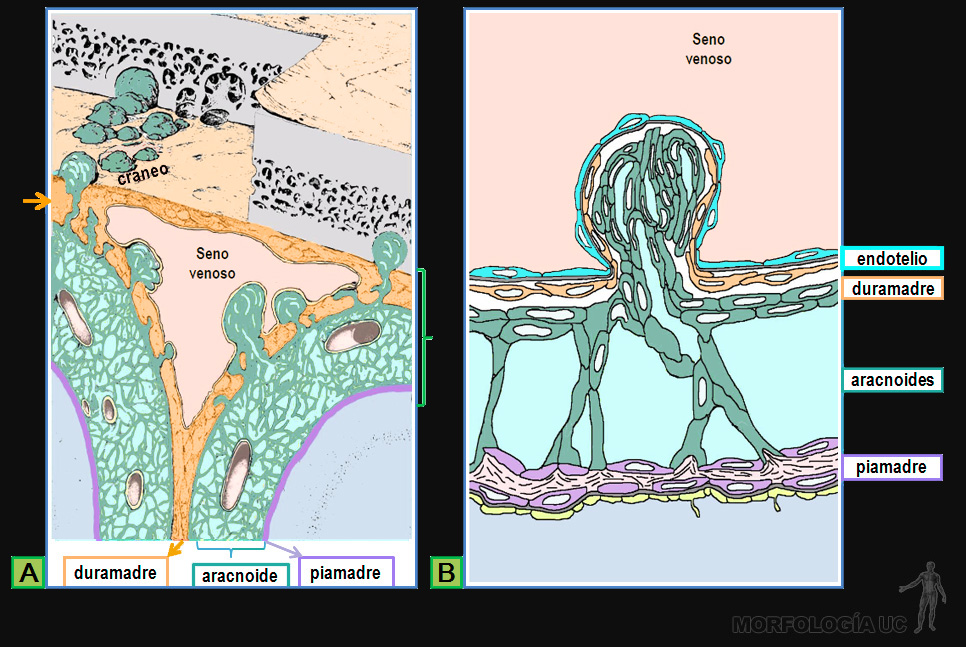
Fig. 3-122: Estructura de las meninges.
- A) a bajo aumento se extienden desde el cráneo hasta el cerebro, y en;
- B) a mayor aumento de muestra desde el lumen de un seno venoso hasta las glías limitantes del cerebro.